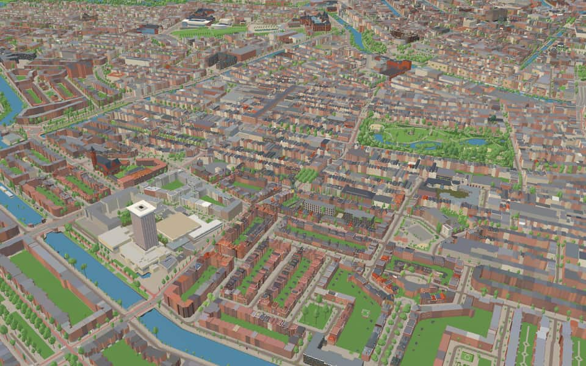
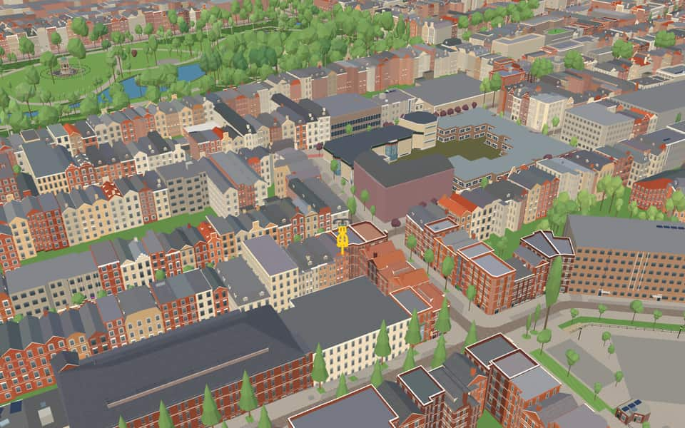
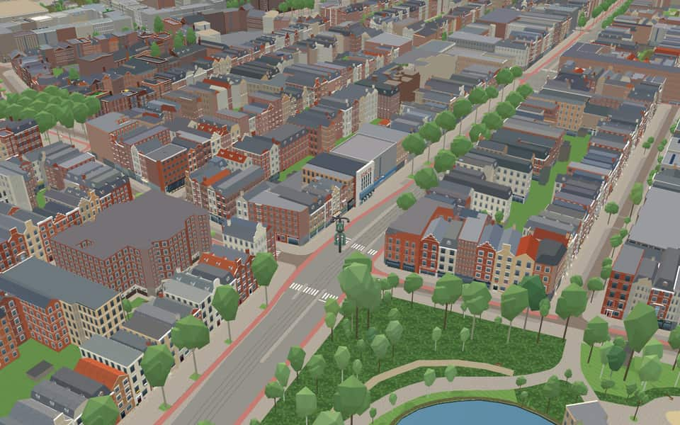
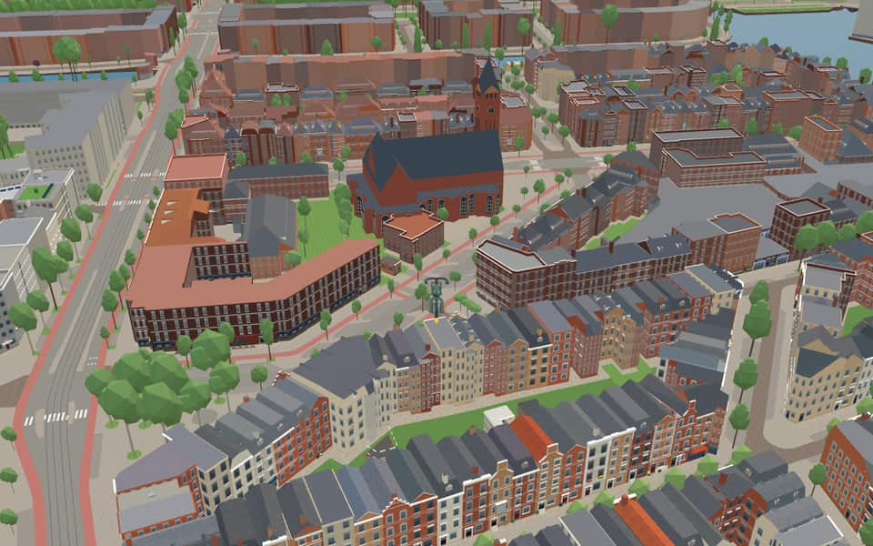

Neighbourhood · Amsterdam
Nieuwe Pijp
Nieuwe Pijp (English: New Pipe) is a neighbourhood in Amsterdam, Netherlands. It is part of the borough of Amsterdam-Zuid. The Nieuwe Pijp is bordered by Ceintuurbaan and Sarphatipark in the north, Van Woustraat in the east, Amstel Canal in the south and Boerenwetering canal in the west. Along with the Oude Pijp (English: Old Pipe), situated north of the Nieuwe Pijp, it is often simply referred to as De Pijp. en.wikipedia.org


In the game
Frames from a ride through Nieuwe Pijp.




6 more photos of Nieuwe Pijp


.jpg){kind=link}


Built here
Buildings modelled one by one for the ride.
Afrikahuis
Rialto
Vredeskerk
- No picture yet
Hotel Okura Amsterdam
- No picture yet
Montessori Lyceum Amsterdam, Van Ostadestraat 103, Amsterdam (1900 school
Three tall storeys of window groups between slender piers)
Did you know
Trivia the ride can show you here.
- The Dageraad complex (1919–1922) is considered one of the showpieces of the Amsterdam School. Wikipedia (translated from Dutch)
- Built between 1921 and 1929, the Nieuwe Pijp is part of Berlage's 1917 Plan Zuid. Wikipedia
- Michel de Klerk and Piet Kramer designed De Dageraad for a socialist housing association. Wikipedia (translated from Dutch)
- The FEBO snack-bar chain is named after the Ferdinand Bolstraat. Wikipedia
- The Ferdinand Bolstraat is so narrow that De Pijp metro station's platforms lie one below the other. Wikipedia
- The Rialto cinema has been run by the Stichting Amsterdams Filmhuis since 1982. Wikipedia
- AfrikahuisThe new church replaced a demolished predecessor and held only 900 seats instead of the original 2000. nl.wikipedia.org
- AfrikahuisFrench limestone facades sit atop a concrete base while the roof floats freely above them. nl.wikipedia.org
- AfrikahuisGlass building block strips were originally set into the concrete base before being sealed with steel grilles. nl.wikipedia.org
- RialtoFilm enthusiast Anton Pieter du Mée commissioned the building's creation in 1920. en.wikipedia.org
- RialtoArchitect Jan van Schaik designed the structure that now houses this cinema. en.wikipedia.org
- VredeskerkVredeskerk (Peace Church) was initially called the Stable of Bethlehem to mark its December 25, 1918 dedication. nl.wikipedia.org
- Ferdinand BolstraatFEBO, a famous Dutch fast-food chain, takes its name directly from Ferdinand Bolstraat. en.wikipedia.org
- Ferdinand BolstraatThe FEBO chain began in 1941 as a bakery named Maison FEBO. en.wikipedia.org
2 more facts
- Ferdinand BolstraatA bridge replaced a ferry over the Singelgracht canal in 1875, connecting the street to the city centre. en.wikipedia.org
- Ferdinand BolstraatPlans to demolish the street for a broad boulevard were abandoned after protests by local activists in the 1960s. en.wikipedia.org
Names on the map
Where the canal, bridge and street names come from.
Canals and water
1 other canal without a recorded story
De Kom
Streets
- AmsteldijkA canal dug around 1920 as part of Berlage's Plan Zuid. It connects the river of the same name with a five-way junction of canals, including the Boerenwetering, the Noorder Amstelkanaal and the Zuider Amstelkanaal.
- AvercampstraatHendrik Avercamp (1585-1634), painter, mainly of winter scenes. Avercamp, who lived in Kampen from 1613, was born deaf and mute and was therefore nicknamed 'de stomme van Kampen' (the mute of Kampen).
- CeintuurbaanAt the end of the nineteenth century a ring road (ceintuurweg, or belt) was laid around a large part of the city. The stretch between the Boerenwetering and the Amstel was later named Ceintuurbaan. The other stretches later got other names, because a section in between was not yet part of Amsterdam at the time.
- Cornelis TroostpleinPastel and genre painter (1697-1750). He became known for his group portrait 'Inspectors of the Collegium Medicum'.
- Cornelis TrooststraatPastel and genre painter (1697-1750). He became known for his group portrait 'Inspectors of the Collegium Medicum'.
- CullinanpleinThe Cullinan is the largest South African diamond.
- Dora TamanapleinSouth African resistance fighter (1901-1983), very active in the women's movement. A member of the women's wing of the African National Congress (ANC) and one of the leading figures of the Federation of South African Women.
- DusartstraatCornelis Dusart (1660-1704), painter and engraver, a pupil of Van Ostade.
- Ferdinand BolstraatPainter (1616-1680), a pupil of Rembrandt, who painted portraits and regents' group portraits, among other things. (The boundary with the Gerard Doustraat was set more precisely by council decision of 9 June 1921.)
- Gerard RevebrugGerard Kornelis van het Reve (1923-2006), writer and poet. With Harry Mulisch (1927-2010) and Willem Frederik Hermans (1921-1995) he formed the Big Three of post-war literature. His works include 'De avonden' (the evenings, 1947), 'Werther Nieland' (1949) and 'Nader tot U' (nearer to thee, 1966). He received the P.C. Hooft Prize (1968) and the Prize for Dutch Literature (2001).
- Henrick de KeijserstraatCity architect and sculptor (1565-1621). In Amsterdam he built the first Exchange, the Westerkerk, Zuiderkerk and Noorderkerk, and the Montelbaanstoren and Munttoren. In Delft his work includes the tomb of William of Orange.
- Jozef IsraëlskadePainter (1824-1911), a pupil of J.W. Pieneman and J.H. Kruseman, who became known for his socially engaged scenes, among them scenes from the lives of poor fishermen.
24 more streets with a story
- Karel du JardinstraatPainter of landscapes and animals (1622-1678).
- Korte TolstraatAfter the toll gate (tol) on the corner of today's Tolstraat and the Amsteldijk. The toll was levied from about 1780 until the area was annexed in 1896, for the upkeep of the Amsteldijk from this point to Ouderkerk. Before the annexation the street was called Verversstraat (council decision of Nieuwer-Amstel, 11 February 1886).
- KuipersstraatNamed after the former Kuiperspad, which already existed in the seventeenth century and on which the street was laid out. Until 1896 the street belonged, under the same name, to the municipality of Nieuwer-Amstel.
- Lizzy AnsinghstraatMaria Elisabeth Georgine (Lizzy) Ansingh (1875-1959), painter, known above all for her scenes with dolls. She was one of the 'Amsterdamse Joffers' (Amsterdam young ladies).
- LutmastraatJanus Lutma (1588-1669), gold- and silversmith. Part of this street came over in 1896 from the municipality of Nieuwer-Amstel as the Ruyterstraat (council decision of Nieuwer-Amstel, 30 September 1890), while another part was called Lutmaplein until 1924 (council decision of 6 June 1917).
- Nieuwe AmstelbrugWhen this double bascule bridge, designed partly by Berlage, was completed in 1903, it was the newest bridge over the Amstel. The Hoge Sluis was also called the Amstelbrug, but this bridge was newer, hence the Nieuwe (new) Amstelbrug.
- PienemanstraatNicolaas Pieneman (1810-1860), history and portrait painter, who succeeded his father J.W. Pieneman as chairman of the society of artists and art lovers 'Maatschappij Arti et Amicitiae', founded in 1839.
- Pieter AertszstraatPainter (1508-1575) of genre pieces and church interiors. Before 1919 the street was called Nieuwe Tolstraat.
- PijnackerstraatAdam Pijnacker (1622-1673), painter, especially of landscapes.
- RustenburgerdwarsstraatThe street was laid out in 1878 on the Rustenburgerpad, which recalls the former country estate Rustenburg, from 1620.
- RustenburgerstraatThe street was laid out in 1878 on the Rustenburgerpad, which recalls the former country estate Rustenburg, from 1620.
- RuysdaelkadeA seventeenth-century family of painters and engravers, the best known of whom was Jacob Isaacksz. van Ruisdael (1628-1682), landscape painter and teacher of Hobbema. The street already existed under this name in the municipality of Nieuwer-Amstel before 1888.
- ScheldestraatThe river (Scheldt) that rises in France, enters the Netherlands beyond Antwerp and then flows into the sea through the Westerschelde.
- Servaes NoutsstraatMichiel Servaes Nouts (1630-1693), the first carillonneur of the city hall on the Dam.
- Sint WillibrordusdwarsstraatNamed after the church of that name, dedicated to St Willibrord, the seventh-century Anglo-Saxon preacher and archbishop who brought Christianity to the whole of the Dutch lands. The church was demolished as unsafe in 1970. The street and the side street were taken over from the municipality of Nieuwer-Amstel in 1896 under the names Kerkstraat, Hoedemakerskade (council decisions of Nieuwer-Amstel, 22 August 1890 and 28 August 1891) and Eerste Hoedemakersdwarsstraat (council decision of Nieuwer-Amstel, 22 August 1890).
- Sint WillibrordusstraatNamed after the church of that name, dedicated to St Willibrord, the seventh-century Anglo-Saxon preacher and archbishop who brought Christianity to the whole of the Dutch lands. The church was demolished as unsafe in 1970. The street and the side street were taken over from the municipality of Nieuwer-Amstel in 1896 under the names Kerkstraat, Hoedemakerskade (council decisions of Nieuwer-Amstel, 22 August 1890 and 28 August 1891) and Eerste Hoedemakersdwarsstraat (council decision of Nieuwer-Amstel, 22 August 1890).
- Tweede SweelinckstraatJan Pieterszoon Sweelinck (1562-1621), a musician of great renown and organist of the Oude Kerk. He wrote many compositions on the psalms and love songs. Before 1896 part of the Tweede Sweelinckstraat lay in the municipality of Nieuwer-Amstel as the Tweede Hoedemakersdwarsstraat (council decision of Nieuwer-Amstel, 22 August 1890).
- Tweede Van der HelststraatBartholomeus van der Helst (1612-1670), painter of militia and regents' group portraits.
- Van der HelstpleinBartholomeus van der Helst (1612-1670), painter of militia and regents' group portraits.
- Van HilligaertstraatPaulus van Hillegaert (1595-1640), painter.
- Van OstadestraatAdriaen van Ostade (1610-1685), painter of peasant life. The stretch between the Amsteldijk and the Sweelinckstraat was formerly called Hoedemakersstraat (council decision of Nieuwer-Amstel, 20 March 1883) and was numbered from the Amsteldijk, as the Kuipersstraat and other nearby streets laid out by Nieuwer-Amstel before 1896 still are. When this stretch was renamed Van Ostadestraat in 1904, it had to be renumbered.
- Van WoustraatGeert van Wou (c. 1450-1527), renowned bell-founder from Kampen.
- VerbindingstraatThe names express the function. The dam links the IJ island, laid out in 1898, with the Handelskade. The street was laid out before the great annexation of 1896, so that residents of Nieuwer-Amstel living here on the edge of Amsterdam could reach their town hall on the Amsteldijk over their own municipality's ground.
- Vincent van GoghstraatVincent Willem van Gogh (1853-1890), painter and draughtsman, who worked first in the Borinage and Drenthe before leaving for France in 1886, where he made most of his best-known paintings. He was of great importance for the development of painting.
1 other street without a recorded story
Vincent van Gogh Street